前提
- PC (Windows もしくは macOSで、ブラウザはChrome、もしくは Firefoxをインストールしておいてください)
- SORACOMアカウント (SORACOMアカウントの作成手順はこちら)
- AWSアカウント(AWSアカウントの作成手順はこちら)
- このハンズオンテキストは、AWSの東京リージョン(ap-northeast-1)、北バージニアリージョン(us-east-1)、オレゴンリージョン(us-west-2)で動作確認しています。
構成図
以下の内容は、Claude 3 Haiku for Amazon Bedrock Edtionを使って出力した内容をDeepLを使って日本語化したものです。
Amazon Web Services
Amazon Location Service
Amazon Location Serviceは、AWS上で地理情報関連のアプリケーションを簡単に構築できるサービスです。開発者は地図表示、ジオコーディング、ルート検索、位置情報のトラッキングなどの機能を、わずかなコーディングで実装できます。プライバシーや規制への対応も容易で、地図データや位置情報の管理も不要です。位置情報の分析や可視化、デバイスの位置追跡など、様々な位置情報関連の機能をAWSのインフラを活用して提供しています。開発者は地理情報システム構築の複雑さから解放され、より顧客中心のアプリケーション開発に集中できるようサポートします。地理情報を活用したサービス開発に興味のある開発者にとって有用なソリューションと言えるでしょう。
AWS Lambda
AWS Lambdaは、AWSが提供するサーバーレスコンピューティングサービスです。従来のサーバー管理を必要とせず、アプリケーションのコードだけを実行できるため、開発者はインフラストラクチャの管理に煩わされることなく、アプリケーションの開発に集中できます。 Lambdaは、イベントに応じて自動的にスケールアップ/ダウンするため、使用量に応じた柔軟な課金が可能です。また、Lambdaはリアルタイムのデータ処理やマイクロサービスの構築、IoTデバイスの制御などに活用できます。 Lambdaは、Node.js、Python、Java、Go、.NET Coreなどさまざまな言語に対応しており、開発者はより適切な言語を選択できます。AWSの他のサービスとも連携が容易で、幅広い用途に活用できるのが特徴です。
AWS Amplify(今回は構築しません)
AWS Amplifyは、フルスタックのウェブアプリケーションやモバイルアプリケーションの開発を簡単に行えるサービスです。Amplifyは、データの操作、認証、ストレージ、機械学習などの機能を提供し、開発者はこれらの機能をすぐに活用できます。Amplifyは、AWS CloudFormationを利用してインフラを管理するため、開発者は手動でリソースを作成する必要がありません。また、Amplifyはフロントエンドフレームワークとも統合されており、React、Angular、Vueなどのフレームワークと連携して使用できます。さらに、Amplifyは継続的デリバリーパイプラインの構築も支援し、アプリケーションの迅速なデプロイを可能にします。Amplifyは、開発者の生産性を高め、アプリケーション開発の複雑さを軽減することで、効率的な開発を実現します。
AWS CDK
AWS CDKは、クラウドアプリケーションのインフラストラクチャをコードで定義・管理できるオープンソースの開発フレームワークです。AWS上のリソース(EC2インスタンス、S3、VPCなど)をプログラミング言語(TypeScript、Python、Java、C#など)を使って宣言的に記述することができ、InfrastructureasCodeの実現を支援します。これにより、リソースの作成・更新・削除が容易になり、環境の再現性や一貫性が高まります。また、CDK Pipelinesを使えば、アプリケーションとインフラストラクチャの両方をCI/CDパイプラインで自動化することも可能です。AWS CDKは、クラウド上のアプリケーション開発をより効率的に行うためのツールとして注目されています。
AWS CloudShell
AWS CloudShellは、AWS Management Consoleに組み込まれており、ブラウザ上で直接AWSコマンドラインインターフェイス(CLI)を使用できる便利なツールです。ウェブブラウザさえあれば、どこからでもAWSリソースにアクセスできるため、モバイル環境でも利用できます。AWScredentialsは自動的に設定されるため、AWS CLIコマンドを直接実行できます。また、事前にインストールする必要がないため、すぐに使い始められます。CloudShellには、AWS CLI、AWS SDK、Gitなどのツールがプリインストールされており、AWS環境の管理や開発に役立ちます。AWSリソースの確認やトラブルシューティングなど、様々なシナリオで活用できるAWSの便利なツールといえます。
SORACOM
以下は、SORACOMユーザーコンソール内にあるSORACOM Support Botに300文字程度で解説してもらった内容になります。
SORACOM リファレンスデバイス
SORACOM リファレンスデバイスは、SORACOM の IoT プラットフォームとシームレスに連携するために設計されたデバイス群です。これらのデバイスは、開発者や企業が迅速に IoT ソリューションを構築・展開するのを支援します。代表的なリファレンスデバイスには、SORACOM LTE-M Button、Wio LTE、M5Stack 用 3G 拡張ボード、GPS マルチユニット SORACOM Edition などがあります。これらのデバイスは、セルラー通信、GPS 追跡、センサー計測などの機能を備えており、SORACOM Air や SORACOM Beam などのサービスと連携してデータの収集・転送が可能です。さらに、SORACOM のユーザーコンソールを通じてデバイスの管理や設定が容易に行えるため、開発期間の短縮と運用の効率化が図れます。これにより、IoT プロジェクトの迅速な立ち上げとスケーリングが可能となり、さまざまなユースケースに対応できます。SORACOM リファレンスデバイスは、SORACOM IoT ストアで購入可能で、すぐに利用を開始できます。
SORACOM Harvest
SORACOM Harvest は、IoT デバイスからのデータやファイルを収集・蓄積するサービスです。SORACOM Air for セルラーや SORACOM Air for Sigfox などのデータ通信と組み合わせて利用することで、センサーデータや位置情報を手軽に収集し、SORACOM ユーザーコンソールで即座に可視化できます。Harvest は、テキスト、JSON、バイナリなどのデータを扱う「Harvest Data」と、画像やログなどのファイルを扱う「Harvest Files」の2つの機能を提供しています。データは標準で 40 日間保存され、オプションを有効にすることで最大 731 日間の保存が可能です。さらに、Harvest に蓄積されたデータは SORACOM Lagoon を利用して高度に可視化したり、アラート設定を行ったりすることもできます。これにより、IoT プロジェクトにおけるデータの収集、保存、可視化までの一連の流れを簡単に実現でき、迅速なデータ確認が可能となります。
SORACOM Funk
SORACOM Funk は、AWS Lambda、Azure Functions、Google Cloud Functions などのパブリッククラウドが提供する FaaS (Function as a Service) を直接呼び出すことができるサービスです。デバイスのスペックや消費電力の制約から複雑な計算処理が難しい場合でも、Funk を利用することでこれらの処理をクラウドにオフロードできます。さらに、FaaS の認証情報を SORACOM Funk が保持するため、デバイス側で認証情報を管理する必要がなく、SDK を使わずに Function を呼び出すことが可能です。これにより、デバイスの実装がシンプルになり、セキュリティも向上します。Funk は、TCP、UDP、HTTP、SMS、USSD、LPWA などの通信プロトコルに対応しており、さまざまなデバイスから利用できます。また、Unified Endpoint を利用することで、Funk だけでなく他の SORACOM サービスとも連携が可能です。月間 50,000 リクエストまでの無料利用枠も提供されており、初期費用や基本料金は不要です。
SORACOM Beam
SORACOM Beam は、IoT デバイスから送信されたデータを任意のサーバーに転送するサービスです。デバイスからのデータをプロトコル変換や TLS 暗号化などの処理を加えて、安全に転送します。これにより、デバイス側での暗号化処理や接続先サーバーの設定変更が不要となり、消費電力や通信量を削減できます。Beam は HTTP/HTTPS、TCP、UDP などのプロトコルに対応しており、デバイスからの通信を適切なプロトコルに変換して転送します。さらに、SORACOM ユーザーコンソールや API を通じて接続先サーバーやパラメータを簡単に変更できるため、大量の IoT デバイスの管理が効率化されます。Unified Endpoint を利用することで、複数のエントリポイントを統一し、デバイスからのデータ送信を一元管理することも可能です。これにより、セキュリティの向上と運用の簡素化が実現され、IoT システムの構築と運用が容易になります。
LINE Tokenの取得方法
利用料金
無料
LINE Notifyにログイン
Tokenを取得するために、Line Nofityにログインします。
- https://notify-bot.line.me/ja/ にアクセスします。
- 右上の[ログイン]をクリックします。
- LINEに登録済みのメールアドレスとパスワードを入力してログインします。
トークン取得
ログインしたらトークンを取得します。なお、ここで発行したトークンは同じものは再発行できないので、無くなさないようにお願いします。
- 右上のアカウント名が表示されているところをクリックして、[マイページ ]をクリックします。
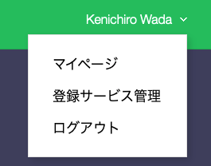
- アクセストークンの発行(開発者向け)の[トークンを発行する]をクリックします。
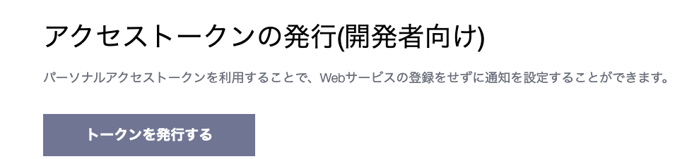
- トークンを発行するでは、以下の設定を行います。
- トークン名 : soracom-handson
- 通知を送信するトークルーム : 1:1でLINE Notifyから通知を受け取る
- [発行する]をクリックします。トークンが発行されます。
- 前述のとおり、発行されたトークンはここでしか取得できませんので、必ずコピー([コピー]をクリック)して、テキストファイルなどにコピーしておきます。
トラブルシューティング
- ログインできない。
- https://guide.line.me/ja/account-and-settings/account-and-profile/set-email-address.html を参考に、再度LINEアプリでメールアドレスとパスワードの設定をお願いします。
- トークンをコピーするのを忘れてしまった。
- 再発行できないので、再度トークンの発行の手順を行ってください。
CloudShellの起動
- AWSのコンソールにログインします。
リージョンはどこでも問題ありませんが、前提条件にある通り、このハンズオンではAWSの北バージニアリージョン(us-east-1)、東京リージョン(ap-northeast-1)、オレゴンリージョン(us-west-2)で動作確認しています。 - 画面右上のアイコン(CloudShell)をクリックします。
- 以下のような画面が表示されれば問題ありません。
- 起動したら、コンソール上で、[cdk --version]を実行します。CloudShellにはCDKやCDKの実行に必要なモジュールなどがあらかじめインストールされています。
表示されたバージョンが2.100.0以上であれば問題ありません(2024/09/05 現在 2.14690 (build b368c78) になっています)
Amazon Location ServiceおよびAWS Lambda関数のセットアップ
githubレポジトリから必要なリソースをダウンロードしてきて、AWS CDKでセットアップします。
- 以下のgithubレポジトリにアクセスし、CloudShell上にCloneします。
git clone https://github.com/Kenichiro-Wada/soracom-amazon-location-service-handson-v2.git
- チェックアウトしたディレクトリに移動します。
cd soracom-amazon-location-service-handson-v2
- 以下のコマンドを実行し、CDKでリソースをデプロイの準備をします。
npm i実行時に、Warningのダイアログが出た場合は、そのまま[Yes]を押します。
すでにCDKを実行したことのある環境で実施する場合は、2つ目の「cdk bootstrap」は飛ばして構いません。
npm i を実行して、「no space left on device, write」などのエラーが出た場合は、右上のアクション->削除 をクリックして、一旦初期化してください。
npm i cdk synth cdk bootstrap cdk diff
- エラーなく正常に終了したら、次のコマンドを実行し、リソースをデプロイします。
途中で「 Do you wish to deploy these changes (y/n)? 」と出たら、yを入力します。
cdk deploy
- Outputs: 以下に表示されているリソース名やARNをコピーしておきます。
Outputs: SoracomAmazonLocationServiceHandsonV2Stack.OutputAmazonLocationServiceHandsonTrackerTrackerName = 〜 SoracomAmazonLocationServiceHandsonV2Stack.OutputBatchUpdateDevicePositionFromGpsMultiUnitForFunkFunctionArn = 〜 SoracomAmazonLocationServiceHandsonV2Stack.OutputIamAuthenticationInformationForSoracomRoleRoleArn = 〜
Amazon Location Serviceの確認
作成されたリソースの確認をします。
- Amazon Location Serviceのコンソールを開きます。
ClCloudshellを実行したのと同じリージョンであることを確認してください。 - 左ペインを開き、[リソースを管理]の下の[マップ]をクリックし、マイマップに新しくMapができていることを確認します。
- 同じように[インデックスの配置]、[ルート計算ツール]、[ジオフェンスのコレクション]、[トラッカー]で作成されていることを確認します。
なお、[ジオフェンスのコレクション]において、今回作成したGeoFenceのコレクションには、ジオフェンス自体は設定されていないことを確認してください。
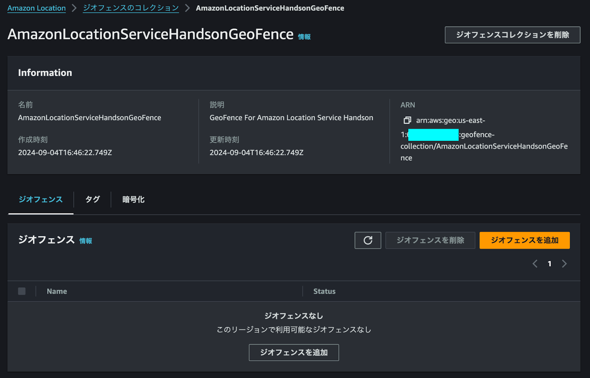
AWS Lambda上の設定変更を実施
リソース自体は問題なくできていますが、LINEの通知のためのToken等を設定します。
- AWS Lambdaのコンソールを開きます。
こちらもCloudshellを実行したのと同じリージョンであることを確認してください。 - 初期表示(表示されていない場合は、左ペインの関数をクリックしてください)でLambdaSoracomAmazonLocation で始まる関数が2つあることを確認します。
SoracomAmazonLocationServ-BatchUpdateDevice〜
SoracomAmazonLocationServic-GeoFenceNotify〜 - まず、SoracomAmazonLocationServic-GeoFenceNotify〜の関数をクリックします。
- 設定タブ-> 環境変数を表示し、編集ボタンをクリックします。
- キー「LINE_NOTIFY_TOKEN」の値を、LINE Tokenの取得のところで取得したTokenの値に変更し、保存をクリックします。
- 一度、一覧画面に戻って、次にSoracomAmazonLocationServ-BatchUpdateDevice〜の関数をクリックします。
- 同じように、設定タブ-> 環境変数を表示し、編集ボタンをクリックします。
- キー「DEVICE_ID」の値を変更します。通知等で表示される識別用のIDなので、名前-日付-Device (ex wada-20240914-Device)などを入力してください。2バイト文字は入力できないので、ご注意ください。
Amazon Location Serviceの動作確認
動作確認として、GeoFenceの設定を行い、その後ダミーで位置情報を登録して、
実際に通知されるかを確認します。
GeoFenceの設定
- 画面右上のアイコン(CloudShell)をクリックして、再度CloudShellを起動します。
- 以下のコマンドを入力して、GeoFenceを設定します。
aws location put-geofence --cli-input-json file://cli-json/geofence-ug-touhoku1.json
- 以下のようなレスポンスが帰ってくれば問題ありません。
$ aws location put-geofence --cli-input-json file://cli-json/geofence-ug-touhoku1.json
{
"GeofenceId": "GeoFence001",
"CreateTime": "2024-09-08T09:26:20.767000+00:00",
"UpdateTime": "2024-09-08T09:26:20.767000+00:00"
}
- 同じようにもう1つ、GeoFenceを設定します。
aws location put-geofence --cli-input-json file://cli-json/geofence-ug-touhoku2.json
この時点で、Amazon Location Serviceのジオフェンスのコレクションにいくと、以下のように登録されたGeoFenceが表示されていると思います。
位置情報の登録
- GeoFenceの設定ができたので、2つ位置情報を設定して、通知がくるか確認します。以下のコマンドを実行します。
aws location batch-update-device-position --cli-input-json file://cli-json/sample-update-ug-touhoku1.json
- 以下のようなレスポンスが帰ってくれば問題ありません。
$ aws location batch-update-device-position --cli-input-json file://cli-json/sample-update-ug-touhoku1.json
{
"Errors": []
}
もし、Errors に以下のようなエラー等が表示された場合は、CloudShell上でviコマンド等を使って、ファイル内のSampleTimeを書き換えてください。
{
"Errors": [
{
"DeviceId": "sampleDevice001",
"SampleTime": "2024-09-14T05:00:00+00:00",
"Error": {
"Code": "ValidationError",
"Message": "timestamps from the future are not allowed"
}
}
]
}
- 同じように以下のコマンドを実行します。
aws location batch-update-device-position --cli-input-json file://cli-json/sample-update-ug-touhoku2.json
- LINEに以下のような通知がきていれば問題ありません。もし、来ない場合は運営にご相談ください。
ユーザーコンソールへのログイン手順
SORACOMユーザーコンソールへのログイン手順を解説します。
ユーザーコンソールへログインする
SORACOM ユーザーコンソール (https://auth.soracom.io/login/) へアクセスします。登録時に利用したメールアドレスとパスワードを入力し、 [ログイン] ボタンをクリックしてください。
ルートユーザーで多要素認証設定済みの場合は、MFA認証コードを入力する画面に遷移します。設定済みのMFA認証コードを入力してください。
以下のような「SIM 管理」画面が表示されたらログイン完了です。
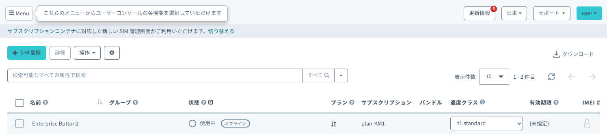
GPSマルチユニットの初期設定
GPSマルチユニットのセットアップは以下の手順を行ってください。
なお、別サイトになりますので、最後まで実施したら、このテキストに戻ってきてください。
https://soracom.jp/recipes_index/2962/#GPS
https://soracom.jp/recipes_index/2962/#SIM_GPS
ガジェット設定〜Harvest動作確認
ガジェット設定を行い、動作確認として、GPSマルチユニットのクリックした際に SORACOM Harvest に対してデータをクリックタイプを保存する方法を解説します。
ガジェット設定にて、グループを作成する。
- ユーザーコンソール(https://console.soracom.io/) の "Menu" から "ガジェット管理" の"LTE-M Button for Enterprise/Plus" をクリックします。
- "GPSマルチユニットを追加"ボタンをクリックします。
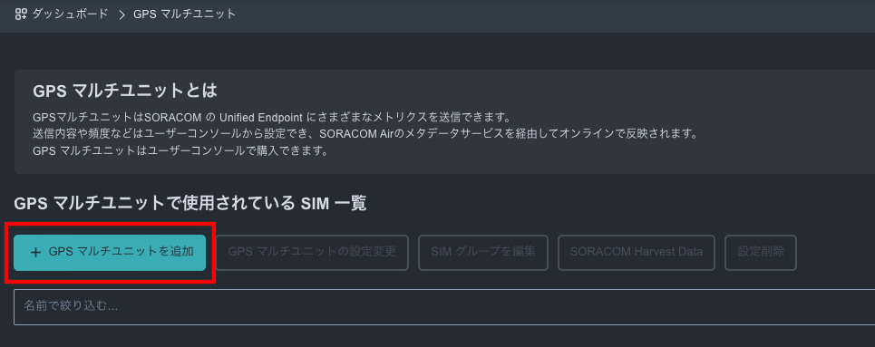
- 今回使用するGPSマルチユニットで使うSIMが表示されているので、チェックを入れて、"次へ : グループを選択"をクリックします。
※貸し出しの場合、一覧に利用するSIMが表示されていない場合は、チューターにご連絡ください。 - 新規グループを作成 を選び、グループ名に任意の名前 (たとえば "gps-multi-uniti-group")を入力して、"次へ : 設定を編集" をクリックします。
- 送信先セクションの"SORACOM Harvest Data ( Lagoon)"にチェックを入れます。
- 定期送信 - 手動モード 詳細設定セクションの送信間隔に"2"(2分間隔)と入力します。

- 画面下部の"保存"ボタンをクリックします。
- 設定完了のダイアログが出てくれば、完了です。GPSマルチユニットのファンクションボタンを押して、設定を反映させます。その後、"デバイス一覧に戻る"をクリックして、デバイス一覧画面に戻ります。


- デバイス一覧にて、"SIMグループを編集"ボタンをクリックします。
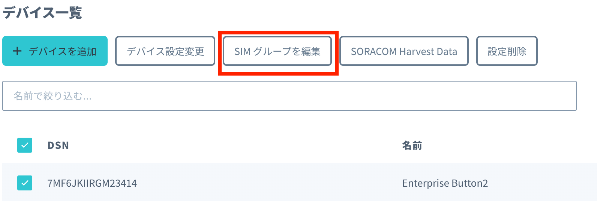 - 作成したSIMグループの設定画面に移動しますので、SORACOM Air for セルラー設定 セクションで以下を入力します。
設定名 | 任意 |
バイナリパーサー | ON |
フォーマット | @gpsmultiunit |
- SORACOM Harvest Data 設定セクションにて、設定がONになっていることを確認します。
Harvest を確認する
Harvest 上のデータを以下の手順で確認します。
- "Menu" から "SIM 管理" を選択します。
- 使用するGPSマルチユニット の SIM の左端にある チェックボックスを選択し、"操作" => "データを確認" を選択します。

- 2分間隔でGPSマルチユニットからデータが送信されていることが確認できます。
データ列の "lat" と "lon" が緯度・経度になります。もし、この2つが "null"の場合、GPSの信号を受信することができていない状態です。窓際に置くなどして見てください。
- マップピンアイコンを選択することで表示を地図に変更して、位置情報を確認します。左上の "+" や "-" でズームを調整できます。
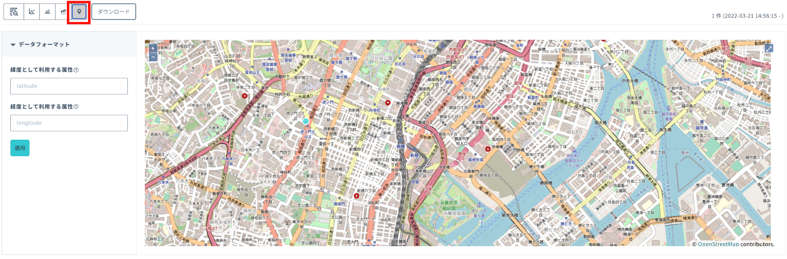
IAM Role認証作成
SORACOM FunkからAWS Lambdaを呼び出す際に利用するAWS IAMロール認証情報の設定方法について解説します。
SORACOMコンソールにて AWS IAMロール認証情報を作成する。
- ユーザーコンソール(https://console.soracom.io/) の右上にあるメニューで、"セキュリティ"を選択します。
- 左ペインにて、"認証情報ストア"をクリックします。
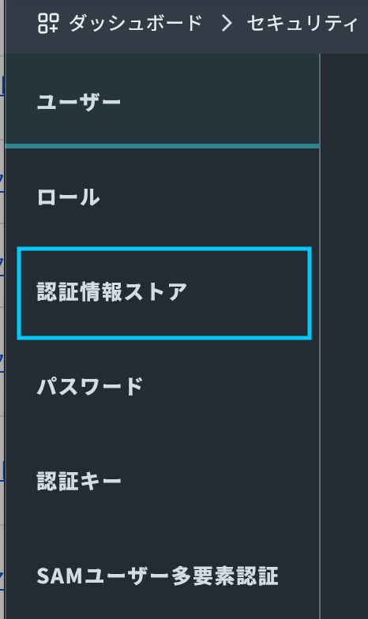
- 「認証情報を登録」ボタンを押します。
- "種別"として「AWS IAM ロール認証情報」を選びます。
それ以外の項目は以下の通りです。
認証情報ID : 任意の英数字 ex) soracom-handson-iam-role
概要 : 空白で大丈夫です。
ロール ARN : 環境構築時のOutput(SoracomAmazonLocationServiceHandsonV2Stack.OutputIamAuthenticationInformationForSoracomRoleRoleArn)に表示されていたIAM RoleのARN。
外部ID : soracomug
入力が終わったら、"登録"ボタンをクリックします。
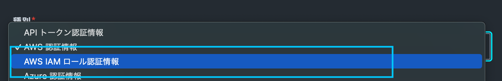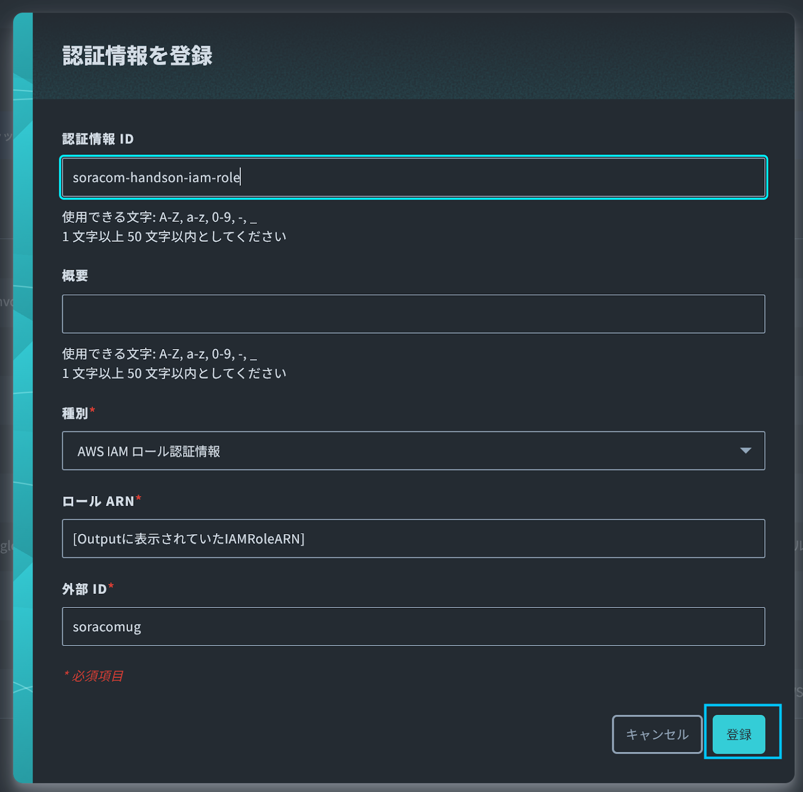
- 一覧に登録した認証情報IDが表示されていれば大丈夫です。
SORACOM Funk設定
SORACOM Funkの設定方法について解説します。
SIMグループにて、SORACOM Funkの設定を作成する。
- ユーザーコンソール(https://console.soracom.io/) の "Menu" から "SORACOM AIR FORセルラー" の"SIM グループ" をクリックします。
- ガジェット設定で作成したSIMグループを選択します。
- 基本設定タブの中にある"SORACOM Funk 設定" をクリックします。
- "on"ボタンをクリックして有効化します。
- 以下を入力します。
関数のARN : 環境構築時のOutput(SoracomAmazonLocationServiceHandsonV2Stack.OutputBatchUpdateDevicePositionFromGpsMultiUnitForFunkFunctionArn)に表示されていたAWS Lambda関数のARN
認証情報 : 先ほど作成したAWS IAMロール認証情報を選択します。
設定したら、下部の "保存" ボタンをクリックします。
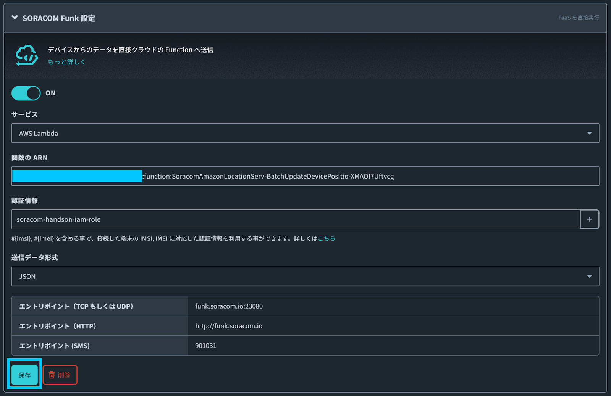
SORACOM Beam設定
最後に運営が用意する可視化環境に接続するために、
SORACOM Beamの設定を行います。
SORACOM Beamを使って、デバイスからのデータを運営が用意したAWS環境に送信し、位置情報を可視化するところまでを解説します。
まず、利用するサービスについて解説します。
SORACOM Beamについて
今回のハンズオンでは、「データ転送支援サービス SORACOM Beam」を用いてAWS LambdaのFunction URLsのエンドポイントにデータを送信します。
SORACOM Beamについて詳しくは以下の公式ページを参照ください。
https://soracom.jp/services/beam/
利用料金
- 日本カバレッジ 1 リクエスト(*) あたり 0.00099 円
- グローバルカバレッジ 1 リクエスト(*) あたり 0.0000099 USD
(*) エントリーポイント (Beam) へのリクエスト、Beamから転送先へのリクエスト、それぞれを個別に 1 リクエストとカウントします。
今回のハンズオンでは、ほとんどの方は無料枠の中でご利用いただけます。
SORACOM Beamの設定
AWS Lambdaを呼び出すSORACOM Beamの設定をします。
所属させたグループ名をクリックし、SIMグループの設定画面に移動します。(以下はButtonの例ですが、GPSマルチユニットでも同様です)
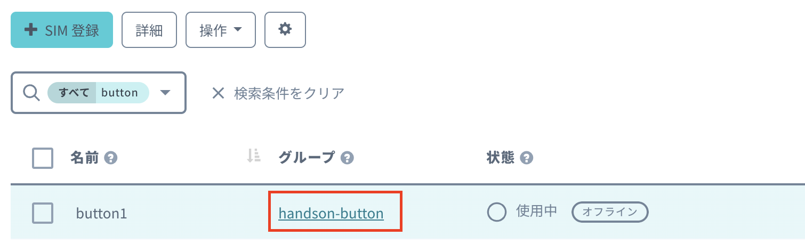
SORACOM Beamのセクションで[設定を追加する]をクリックして、「UDP → HTTP/HTTPS エントリポイント」を選択します。


以下の設定を入力して「保存」をクリックします。
今回のハンズオンでは、AWS側のデバイスIDとして、カスタムヘッダで設定した値を利用しますので、必ず設定を行うようにしてください。
設定名 | 任意 |
ホスト名 | 当日運営よりご案内します。 ※デバイスによって異なるので、注意 |
レスポンス - ステータスコードを省略 | ON |
カスタムヘッダ | アクション : 追加 ヘッダ名 : x-soracom-device-name 値 : 任意ですが、英数字、ハイフン(-)、アンダースコア(_)、ドット(.)のみ利用可能です。 |


動作確認
デバイスから位置情報を送信してみましょう。オンライン上の運営が表示している画面に、カスタムヘッダで入力した値と緯度軽度が表示されればOKです。
位置を変えることで、デバイスの位置が変わりますので、休憩がてらにちょっと散歩に出かけてみましょう。
（Buttonの場合、押した場所によっては、基地局が変わらず、位置が変わらない可能性もあります）
設定が問題ない場合、GPSマルチユニットからの情報が、SORACOM Funk経由でAWS Lambda関数まで届いていると思います。
- AWS Lambdaのコンソールの関数一覧でSoracomAmazonLocationServ-BatchUpdateDevice〜 をクリックします。
- モニタリングタブを選択して、"CloudWatch ログを表示"ボタンをクリックします。
- 問題なければ、ログストリームが作成されているはずです。
- そのうち1つがクリックして、以下のような出力が出てきていると思います。
- GPSマルチユニット(を含むGPSデバイス全般ですが)は室内の場合、位置情報が取得しずらいため、緯度経度を示す lat と lon が null になっていることが多いと思いますので、その場合は、窓際に配置することで、位置情報が取れやすくなると思います。
- 今回のハンズオンでは、以下の2箇所にGeoFenceを配置しています。
なので、上のGeoFence(オレンジ色)あたりまで歩いて行ってみましょう。
そうすると、下のGeoFenceから出発した通知、上のGeoFenceに到着した通知がLINEに来ると思います。
最後に運営が用意する可視化環境に接続するために、
SORACOM Beamの設定を行います。
[[import 4kjwp55cjmjztk62q575le7n7y0pghef.lambda-url.ap-northeast-1.on.aws]]
SORACOMプラットフォーム側の後片付けについては以下を実施してください。
後片付けの手順を解説します。
SIMグループの削除
SIMグループを削除するには、紐づいているSIMグループを削除してから削除する必要があります。
- SIMの紐付け解除は、SIMグループの登録と同じ手順で、SIMを選択して、SIMの所属グループ変更画面を表示します。
新しい所属グループで[グループ解除]を選択して、登録すれば解除されます。
- SIMグループの削除は、SIMグループ設定画面右上の[削除]をクリックします。
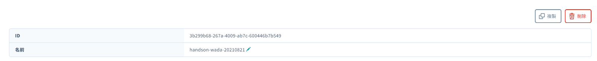
- 問題なければそのまま[削除する]をクリックします。これで完了です。
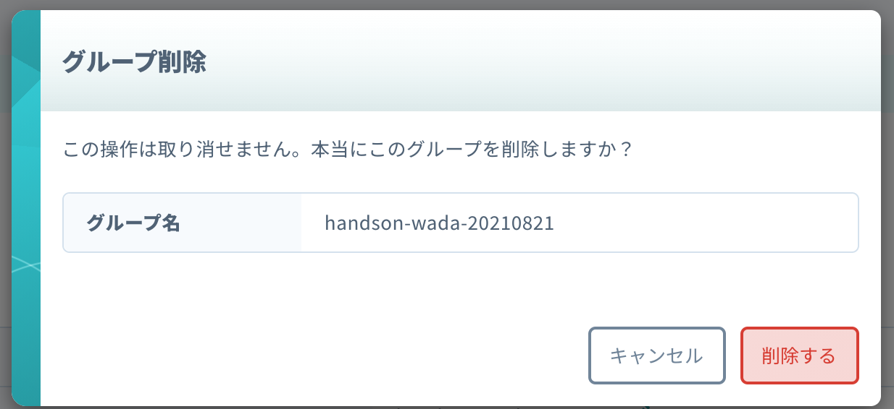
なお、SIMの紐付けがあると、エラーになりますので、必ずSIMの紐付けを全部解除してから行ってください。
ボタン持ち込み/GPSマルチユニット持ち込みの場合
このままでも、課金が発生することはありませんが、後片付けを行います。
後片付けの手順にある、以下の手順のみ行ってください。
- SIMグループの削除
ボタン貸し出しの場合
ボタン貸し出しの場合、SORACOMのコンソールからログアウトして、ボタンを運営メンバーにお返しください。
GPSマルチユニット貸し出しの場合
後片付けの手順にある以下の手順を実施した上で、GPSマルチユニットからSIMカードを外して、GPSマルチユニットをお返しください。
SIMカードはお持ち帰りください。
- SIMグループの削除
AWS環境側のリソースの削除については以下の手順で削除を行なってください。
作成したAWSリソースの削除
- 画面右上のアイコン(CloudShell)をクリックして、再度CloudShellを起動します。
- 以下のコマンドを入力して、リソースを削除します。途中で
Are you sure you want to delete: SoracomAmazonLocationServiceHandsonV2Stack (y/n)? と聞かれたら y を入力します。
cdk destroy
- SoracomAmazonLocationServiceHandsonV2Stack: destroyed と表示されればリソース削除完了です。
お疲れ様でした！